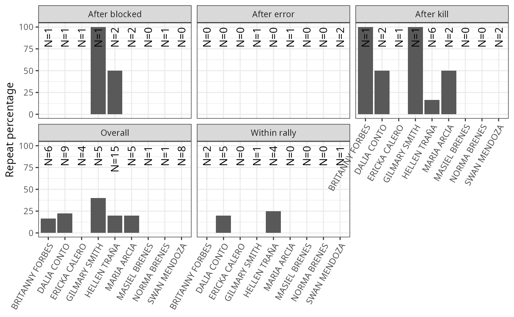

Note: analysis is done on the basis of attack actions, and simply assumes that the setter on court made the set.
Usage
ov_setter_repetition(
x,
setter_id,
setter_name,
exclude_attacks = c("PP", "PR", "P2"),
exclude_negative_reception = TRUE,
exclude_highballs = FALSE
)Arguments
- x
data.frame: the
playsdata.frame as returned bydatavolley::read_dv()orperanavolley::pv_read()- setter_id
string: (optional) the player ID of the setter to analyze (or provide
setter_name). If neithersetter_idnorsetter_nameare provided, all setters will be analyzed separately, and collated results returned- setter_name
string: (optional) the name of the setter to analyze (ignored if
setter_idis provided). If neithersetter_idnorsetter_nameare provided, all setters will be analyzed separately, and collated results returned- exclude_attacks
character: vector of attack codes to exclude
- exclude_negative_reception
logical: if
TRUE, exclude attacks following poor reception (likely to be out-of-system and therefore might not represent attacks on which the setter had genuine options)- exclude_highballs
logical: if
TRUE, exclude highball attacks (likely to be out-of-system and therefore might not represent attacks on which the setter had genuine options)
Value
A data.frame with columns "team", "setter_name", "setter_id", "player_name", "player_id", "category", "opportunities", "repeats", "repeat%"
Examples
x <- plays(ovdata_example("NCA-CUB", as = "parsed"))
set_reps <- ov_setter_repetition(x, setter_name = "LOLETTE RODRIGUEZ")
library(ggplot2)
ggplot(set_reps, aes(x = player_name, y = `repeat%`)) + geom_col() +
geom_text(aes(x = player_name, label = paste0("N=", opportunities)),
angle = 90, y = 100, hjust = 1, inherit.aes = FALSE) +
facet_wrap(~category) +
theme_bw() +
theme(axis.text.x = element_text(angle = 60, vjust = 1, hjust = 1)) +
labs(x = NULL, y = "Repeat percentage")
#> Warning: Removed 14 rows containing missing values or values outside the scale range
#> (`geom_col()`).
